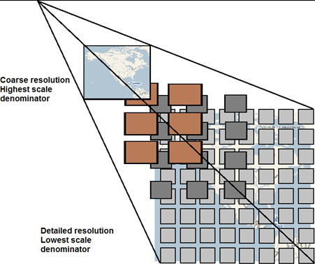
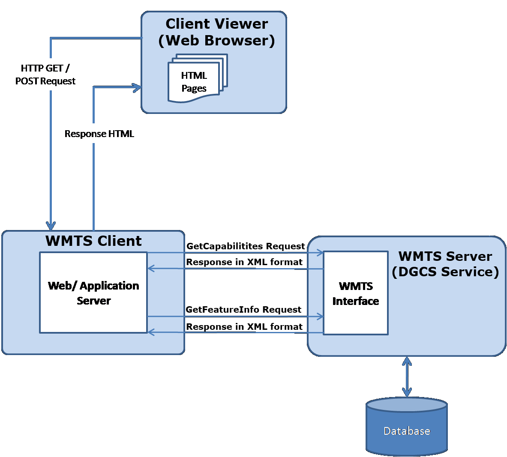
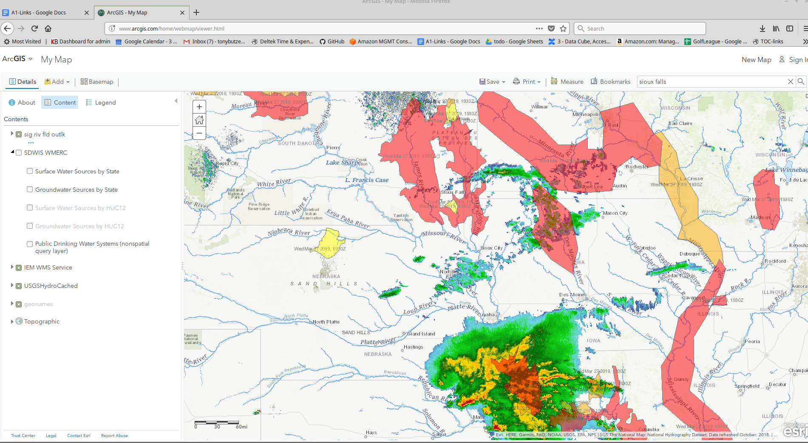

WMS¶
ODC and WMS plus WMTS and sometimes WCS¶
Docker¶
Start the instance
Run the Docker
docker run \
--rm \
opendatacube/wms \
gunicorn -b '0.0.0.0:8000' -w 5 --timeout 300 datacube_wms:wms
Error¶
Warning: missing DB_DATABASE environment variable
File "/usr/local/lib/python3.6/dist-packages/gunicorn/arbiter.py", line 528, in reap_workers
raise HaltServer(reason, self.APP_LOAD_ERROR)
gunicorn.errors.HaltServer: <HaltServer 'App failed to load.' 4>
Now What?¶
WBS¶
read the docs; limited; DONE!
play with the parts
cube-in-a-box; cloud-sanity?
flask
gunicorn
save to git and publish the docs
odc-modis
odc-lcmap; sleepy
publish
https://github.com/opendatacube/datacube-ows
https://datacube-ows.readthedocs.io.
WMTSpyramid
WMTSarchitecture
OGC WMS
Layers¶
Servers¶
Open Data Cube¶
Tutorial WMS¶
Searching the Geoportal¶
http://mesonet.agron.iastate.edu/cgi-bin/wms/nexrad/n0q.cgi?SERVICE=WMS&REQUEST=GetCapabilities
Build a weather map¶
start web client http://www.arcgis.com/home/webmap/viewer.html
add geonames layer
Modify Map - ADD+ (layer from web) WFS
https://services.nationalmap.gov/arcgis/services/WFS/geonames/MapServer/WFSServer?request=GetCapabilities&service=WFS
ADD layer
Find address or place –> Sioux Falls
Turn off geonames - structure - too busy
add water hydro info
https://basemap.nationalmap.gov/arcgis/services/USGSHydroCached/MapServer/WMSServer?request=GetCapabilities&service=WMS
add radar weather
http://mesonet.agron.iastate.edu/cgi-bin/wms/nexrad/n0q.cgi?SERVICE=WMS&REQUEST=GetCapabilities
zoom out - play with 45 minutes ago etc.
STRETCH GOAL - add flood water - hazards
https://idpgis.ncep.noaa.gov/arcgis/services/NWS_Forecasts_Guidance_Warnings/sig_riv_fld_outlk/MapServer/WFSServer?request=GetCapabilities&service=WFS
Change transparency to 50%
Flood Zones https://msc.fema.gov/portal/search?AddressQuery=sioux%20falls#searchresultsanchor
Ground Water etc - https://watersgeo.epa.gov/arcgis/services/OWPROGRAM/SDWIS_WMERC/MapServer/WMSServer?request=GetCapabilities&service=WMS
Real Time weather - cheat - https://www.arcgis.com/home/item.html?id=bb37ceceeac14c829b2cf449ff0c14d8
Example Map¶
weather flood